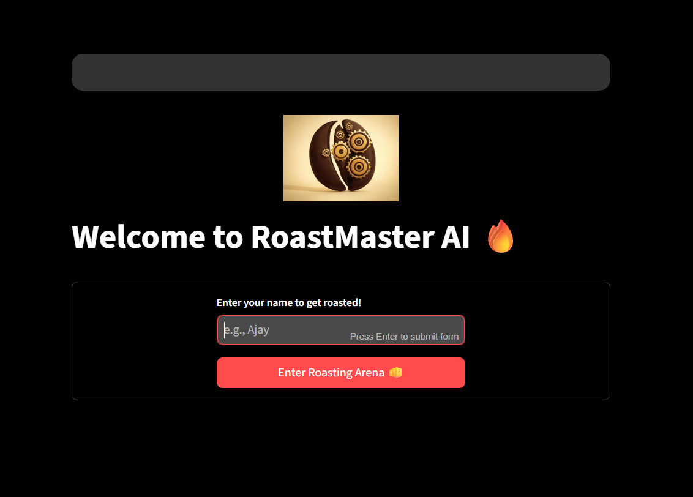
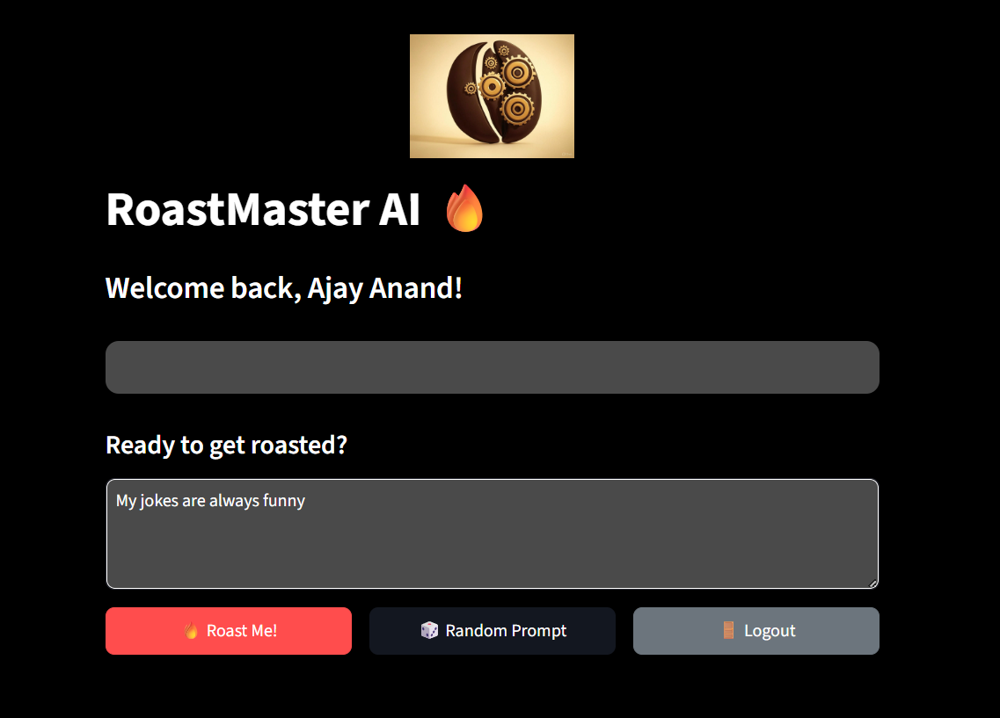
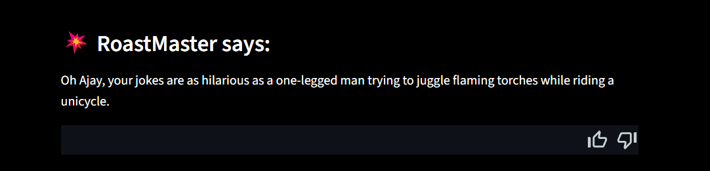
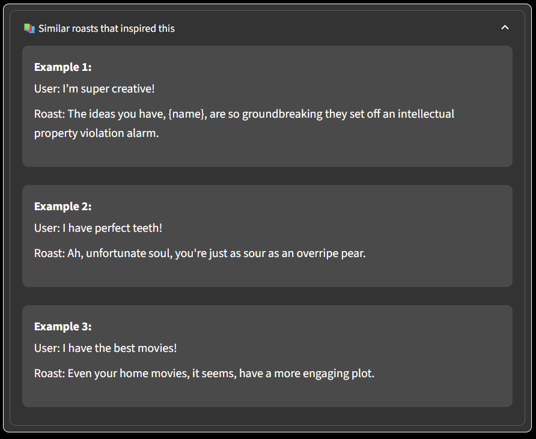

RoastMaster AI is a groundbreaking generative AI chatbot designed to humorously roast users with clever, sarcastic, and context-aware responses. Leveraging powerful language models and semantic intelligence, RoastMaster AI creates an unforgettable user experience through wit, timing, and ethical AI design. It's not just smart—it’s savagely entertaining.

System Workflow
User Input: The user types something roast-worthy—intentionally or not.
Semantic Search: A deep learning model finds contextually similar roast examples for inspiration.
Prompt Construction: A tailored prompt is generated that reflects the user's tone and target style of humor.
LLM Generation: The local model crafts a spicy roast using curated prompt data.
Output Display: The Streamlit interface delivers the burn with style, interactivity, and options for more.

Model Architecture
Mistral-7B-Instruct-v0.3 is the witty brain behind RoastMaster AI. It’s optimized for dialogue, creativity, and wit—all delivered locally through LM Studio for performance and privacy.
7 Billion parameters of roasting potential
Fine-tuned with custom humorous dialogues
Quick, responsive, and wickedly sharp with insults
all-MiniLM-L6-v2 handles the semantic search engine:
Quickly identifies contextually relevant roasts from the dataset
Super lightweight and efficient for real-time operations
Sample Code
from openai import OpenAI
from roast_engine import get_similar_examples, build_prompt
client = OpenAI(base_url="http://127.0.0.1:1234/v1", api_key="lm-studio")
MODEL = "mistral-7b-instruct-v0.3"
user_input = "I think I'm the funniest person alive"
examples = get_similar_examples(user_input)
prompt = build_prompt(examples, user_input, username="Ajay")
response = client.chat.completions.create(
model=MODEL,
messages=[{"role": "user", "content": prompt}],
temperature=0.85,
max_tokens=150
)
print("RoastMaster says:", response.choices[0].message.content.strip())
Streamlit Frontend
Sleek interface where users can type, laugh, and repeat
Interactive roast preview with options to retry, refresh, or save
Smart alerts to moderate content and maintain ethical boundaries


Content Moderation & Ethics
Roasting should never cross the line. RoastMaster AI implements:
Real-time content filtering for hate speech, toxicity, and personal attacks
Carefully curated training data with ethical guidelines
Clear prompt boundaries to steer responses toward humorous, not harmful
Future Enhancements
Voice mode for verbal roasting via TTS
Roast intensity selector for light burns to nuclear takedowns
Roast battles between users with leaderboard support